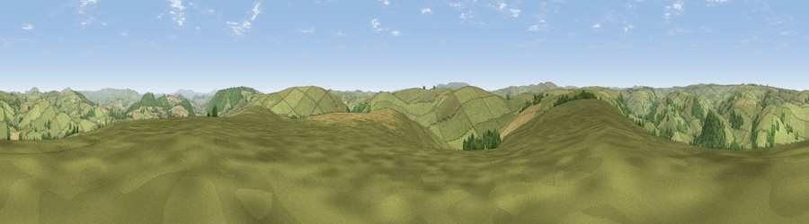

Viewpoint near Newcastle
#9847 in England · top 29% of its area beats it · near NewcastleThe view, rendered

A 360° render of this exact spot computed from the terrain model, tree cover and land cover — summer colours, afternoon light, calibrated against photographs of famous viewpoints. Real trees, hedges and buildings will differ in detail.
The panorama
Grey silhouette: terrain skyline in each direction (720 bearings, Earth curvature and refraction included). Dashed green: skyline with trees (+15 m) and buildings (+8 m) as obstacles. Blue strip: how far the ground is visible on each bearing.
Where the view opens
Wedge length = distance to the farthest visible ground on that bearing (vegetation-aware). Rings at 10, 25 and 50 km.
What fills the view
80% grassland · 12% woodland · 8% cropland
Angular shares of the visible panorama (visual magnitude), not map area. Landscape diversity 0.28 (0–1 Shannon).
Key numbers
More beautiful places nearby
The staircase of upgrades: each row has a higher view potential than everything closer. Driving times are estimates from straight-line distance, calibrated against real road routing — check an actual route before setting out.
| Place | Direction | Drive | Score |
|---|---|---|---|
| Rock Hill | SE · 2 km | ~6 min | 69.5 |
| Cwm-Sanaham Hill | S · 6 km | ~12 min | 70.1 |
| Stepple Knoll | ENE · 6 km | ~13 min | 72.4 |
| Viewpoint near Brockton | ENE · 7 km | ~14 min | 74.9 |
| Viewpoint near Bishop's Castle | N · 9 km | ~17 min | 75.5 |
| Viewpoint near Hopton Castle | ESE · 10 km | ~20 min | 79.3 |
| Viewpoint near Asterton | ENE · 15 km | ~27 min | 83.0 |
| The Lawley | NE · 28 km | ~45 min | 85.8 |
52.42224, -3.08409 · source: screening · position refined by local search. Computed location — check access rights before visiting.